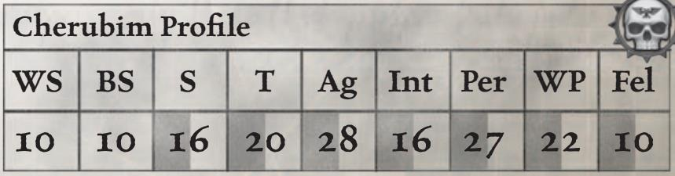
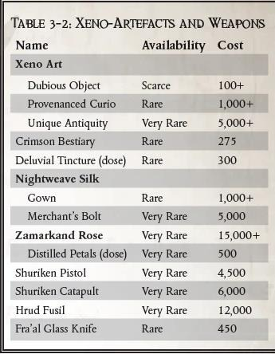
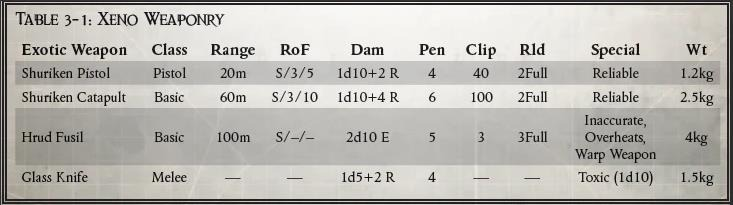

时免疫属性伤害与眩晕的效果（芯片关闭后仍会正常承受这些效果）。
芯片可通过口令或信号再次关闭，关闭后该生物会获得 1d5 点疲劳等级。遗憾的是，每次使用芯片都有 10% 的概率无法关闭，使生物陷入无法控制的狂怒状态（即便如此，数小时后该生物也会因过度消耗与休克而死亡）。
赛博獒犬通常由帝国法务部或执法单位部署，用于镇压惯犯与异端。外形为钢铁猎犬，以狩猎性生物的大脑与神经系统驱动，是帝皇律法的延伸。一旦被释放那将是令人畏惧的景象。
| 移动：4/8/12/24 | 承伤：8 |
| 技能：警觉（Per+10）、躲藏（Ag+10）、追迹（Int+20）、潜行（Ag+10）、游泳（S） | |
| 天赋：协同作战、无畏 | |
| 特性：装甲植入、兽性冲锋、强化五感（嗅觉）、机械（4）、四足动物、体型（小型） | |
| 武器：撕咬（1d10+3 R） | |
| 护甲：头部 6、前肢 6、躯干 6、后肢 6 | |
| 装备：红外视觉植入体、过滤塞 |
灵控侍宠（psy-bonded or psyber）是通过神秘技术（arcane technology）与主人绑定的活体生物。主人与侍宠体内的接口回路（即，灵控诱饵）允许主人精准地直接控制，主人可以共享侍宠的感官，并可以在远距离瞬时下达指令。
由于这方面技术细节过于鲜为人知，因此通常只有小型非智慧生物可被灵控绑定。此生物必须拥有兽性特性，且体型为小型及以下。
角色控制灵控生物的距离等于主人的意志加值公里，不过依照当地环境可能会大幅限制范围。
一个生物可同时施以赛博改造与灵控绑定升级。该植入物的费用已包含在灵宠的花费中，但请注意：角色必须遵循植入物安装规则（《黑暗异端》核心书植入物部分）。
改造效果：灵控生物的智力、意志各+ 5。同时侍宠的承伤+1.
特殊规则：
灵能等级≥2 的角色，可将灵控侍宠作为灵能法器（Psy-Focus），并可将自身灵能效果延伸至侍宠，即施展灵能的目标对象数+2。 （译注：译者猜这句话的意思是作用于单一对象的灵能可以对两个目标使用）
灵控鹰是机械神教赠予帝国权贵的礼物。卡利西斯星区最著名的使用者是哈克斯总督，他拥有一对由拉斯铸造世界铸造领主赠送的华丽的巨型灵控鹰。它们在清宫大厅那广阔的穹顶中盘旋，成为主人之眼，从高处审视一切。
| 移动：2/4/6/12 | 承伤：6 |
| 技能：警觉（Per+ 20）、躲藏（Ag+10） | |
| 天赋：迅捷打击 | |
| 特性：野兽、飞行 8、体型（超小） | |
| 武器：无武装（1d10–3；原始） |
伺服颅骨是以人类颅骨为基底（通常是忠仆或低级技术神甫的遗骸），装载基础机魂、维持系统与反重力引擎的构造体。它们被写入执行单一任务的程式，并配备完成相关任务所需的基础设备。它们拥有体型小、机动性强的优势，可进入人类无法抵达的区域或危险环境，充当主人额外的 “眼睛与耳朵”。伺服颅骨是机械神教的象征，他们认为这些造物的机魂忠诚且纯洁，是极其优秀的仆从。除此之外，在许多帝国部门成员和巢都世界的高阶精英的身边也能找到伺服颅骨忠实服务的身影。
在大多数方面，伺服颅骨的运作方式与语音控制型赛博侍宠完全一致。最主要的区别在于，伺服颅骨拥有独特的本能（程式响应），并且可以接受额外的指令。所有伺服颅骨都能悬浮于地面，并可保持静止任意时长。
守卫型伺服颅骨又称战斗颅骨/枪械颅骨（取悦于它们的装载的武器）。它们被设计成拥有强化结构，适配单一武器系统与瞄准程序的型制，是稀有、尊贵却高效的保镖装置。它们体型小巧、时刻警戒、能在阴影中静默悬停等能力使它们成为出奇隐秘又高效的仆从。
| 移动：— | 承伤：5 |
| 技能：警觉（Per+ 20）、闪避（Ag+10）、潜行（Ag+20）、躲藏（Ag+10） | |
| 天赋：无所畏惧、对应武器的武器训练 | |
| 特性：黑暗视觉、飞行 6、机械（3）、程式化本能、体型（超小） | |
| 武器：无武装（1d10–3 I；原始），另见下文 | |
| 护甲：头部 3（机械特性） |
战斗/解剖颅骨：战斗颅骨下方悬有多节铰接肢体，末端装有单分子利刃。在主人的指令下，颅骨电路内的战斗算法会被激活，化身为高速旋转切割的杀戮装置，利刃与单分子刀呼啸翻飞。该颅骨的武器将替换为 1d5+2 伤害，穿甲 2 单分子刃。该颅骨无法用单分子刃进行格挡。少数战斗颅骨会搭载其他更强力的武器，例如电鞭与链锯刀，但这类型号更为稀有且昂贵。
枪械颅骨：枪械颅骨能搭载一挺远程武器，例如自动卡宾枪或激光卡宾枪；理论上也可安装任何手枪或紧凑型基础武器 —— 这显然会提高购买成本与稀有度。同时，该颅骨搭载的枪械会装有红点激光瞄准器。
特殊规则：
指令：守卫型伺服颅骨可以同赛博侍宠一样接受指令。除此之外，伺服颅骨还可以接受以下指令。
守卫：跟随并保护主人或指定目标。
搜索与消灭：有条不紊地搜索指定区域，消灭不在预设豁免列表上的所有目标。
哨戒：守卫特定地点/物体或巡逻指定区域。
程式化本能：除非收到明确的相反指令，否则守卫颅骨会主动攻击并摧毁任何直接袭击或威胁其保护对象的目标（“容忍等级“可由主人设定）。此外，如果颅骨自身遭到攻击，它会以致命武力自卫。如果主人身负重伤，它会挡在主人身前（不惜自身彻底损毁），以阻止进一步的伤害。
最常见的伺服颅骨，它们被设计用于协助完成某一特定任务。大多数单任务颅骨都装有一组基础的可伸缩机械夹钳，以及履行其职责所需的其他各类装备。
| 移动：— | 承伤：4 |
| 技能：警觉（Per+ 20）、闪避（Ag）、潜行（Ag+10）、躲藏（Ag+10） | |
| 天赋：无所畏惧 | |
| 特性：指令、黑暗视觉、飞行 6、机械（1）、程式化本能、体型（超小） | |
| 武器：无武装（1d10–3 I；原始） | |
| 护甲：头部 1（机械特性） | |
| 装备：颅骨配备图像中继器，可将所见所感记录或传输给主人，或相连接的沉思者；同时搭载环境导航、生物与物体识别系统，并完美地追踪它们的路径。单一任务型伺服颅骨还会专门加装用于执行特定简单任务的装置，以下是最常见的类型： |
-探测型：搭载鸟卜仪与音阵数据系统，用于回传探查结果。
-信使型：用作信使，配备专用身份扫描仪与详尽的本地区域预编程地图等。可直接携带卷轴、数据板等实体信件，或通过内部全息系统回放录音。
-照明型：搭载强力灯组或辉光球，甚至也有装载燃烧炭火盆的类型（国教尤为喜爱）。
-扩音型：配备大功率广播系统，可播放预录制的讯息或声音，或由主人通过它发声。
-医疗型：内置医疗包与医疗扫描仪，此类型伺服颅骨货得医疗（Int+20）技能，可在主人指令下进行急救。
-工具型：配备多功能工具，可执行预设的简易维护任务；此类型伺服颅骨真正用途是让主人远程操控，充当额外的 “双手”，进入无法抵达的区域。
特殊规则：
指令：单一任务型颅骨可以同赛博侍宠一样接受指令。此外还预设了执行与其功能相关的简单重复任务（如为某个房间照明、将信息送至指定地点等）。
程式化本能：除非主人明确下令，否则颅骨不会攻击，甚至不会自卫；即便受命加入战斗，一旦受损也会立刻脱离危险。若遭遇阻碍、干扰或损坏，颅骨会自动返回主人身边或操作基站。
智天使是一种生化构造体，起源不明，却是帝国境内少数被允许存在的生化塑型人造人（biosculpted homunculi）之一。它们最常见的外形是略显肥胖、神态诡异的无性别孩童，通常还植入了义体羽翼与重力发生器，可进行有限飞行。
智天使并非真正的生命，它们那合成的、无血蜡质躯体无需进食与睡眠，由内置能源电池供能。其控制系统为强化皮质层（augmented cortex）与神经系统，通常取自猿类、鸟类、猪、猫科等低等生物。通过植入预设指令，可执行简单任务：抄写文本、递送小件物品，或以义体声带不知疲倦地歌颂帝皇。
除贵族家族与帝国高层（尤其国教）外，多数帝国公民对智天使抱有厌恶与迷信式的恐惧。这并非空穴来风，有记录显示，极少数情况下智天使会发生 “退化”。其某种腐化和扭曲的有机皮质层接管了它们的预设行为，引发恶性后果。

| 移动：2/4/6/12 | 承伤：3 |
| 技能：警觉（Per）、躲藏（Ag+ 10）、表演（歌唱）（Fel+20）或 生计（抄写员，裁缝 或 仆人）（Int+10） | |
| 天赋：天赋异禀（表演或生计） | |
| 特性：飞行 5、机械（1）、程式化本能、体型（小型） | |
| 武器：握拳挥打（1d5-3 I；原始） | |
| 护甲（机械）：头部 1、手臂 1、躯干 1、腿部 1 |
指令：智天使可如赛博侍宠一样接受指令，还可执行预设任务，如 “整理祭祀服”“抄写文稿”“举起祷文卷轴” 等。
程序化本能：无明确指令时不会主动攻击或施暴；受伤或受惊会逃跑；无人指挥时慵懒怠惰，常停在高处观望。有传闻称它们会偷窃闪亮小物件藏于房梁。
-近战武器（巢都、铸造、虚空、战区、审判庭）；射击武器（巢都、铸造、虚空、战区、审判庭）；护甲与立场（铸造、边境、战区、审判庭）；装备弹药武器升级（铸造、边境、虚空、战区、审判庭）；药物（战区）由萝卜翻译。
-近战武器（蛮荒/封建世界）；护甲与立场（封建/蛮荒、巢都）；植入物由浣熊旅记翻译。
-射击武器（蛮荒/封建世界）由五三点九翻译。
-装备、弹药、武器升级（封建/蛮荒、巢都）由红达貘和维维豆糕翻译。
-药物（巢都、边境）由白日铸炉翻译。药物（审判庭）由 PhgFenix 翻译。
-消耗品服务与其他由 PhgFenix 翻译。
-机仆、侍宠、伺服颅骨由 PhgFenix 翻译。
【译者：石盾人】
巫师、神秘学者和巫师创造一些实体物品的目的,是为了将黑暗能量束缚为永久形态(尽管有时技艺拙劣的工匠和自欺欺人的艺术家也会通过噩梦般的意外达到同样的效果)。充满亚空间能量的物品虽然非常罕见,但形状、性质和功能却千奇百怪,从排斥恶魔力量的负电荷碎片,到专门用来屠杀粗心大意者的玩物,不一而足。它们包括各种小饰品、护身符和符咒,以及臭名昭著的恶魔武器——这些武器的致命性因亚空间扭曲实体的束缚而大大增加。
亚空间可以像污染肉体一样轻易污染非生物,产生各种令人不安的结果。这种邪恶的工艺品用途广泛,从保护到能量传导,仅受限于其制造者的黑暗想象和能力。以下是恶魔崇拜者和巫师手中的三种此类工艺品。
这些物品的价格和稀有度列出了它们相对出现的频率和制造成本。如果这些违禁物品出现在黑市上,那些扭曲到渴求它们的人无疑会支付更高的价格。
| 名称 | 价格 | 稀有度 |
|---|---|---|
| 亚空间护身符 | 7000 | 非常稀有 |
| 寄生玩偶 | 1000 | 稀有 |
| 恶意法典 | ||
| 低级 | 5000 | 稀有 |
| 高级 | 10000+ | 非常稀有 |
亚空间护身符有多种形式,但最常见的是刻有特殊图案的石头、吉祥物口袋、印有符号的护身符或圆环。这些物品经过仪式准备,有助于释放亚空间魔法和散发黑暗能量。
使用亚空间护身符需要部分行动,并需要通过困难(-10)的专注检定。如果检定成功,护身符将为恶魔召唤仪式提供+10 的加成,或允许在使用巫术力量时重新掷一次灵能能力骰。使用这些护身符并非没有危险。如果召唤检定失败度超过三个等级,使用者必须进行灵能现象投掷。
这些可怕的玩偶由蜡、肉、发条、活质、碎片或其他令人厌恶的材料制成,用于引导巫师的黑暗力量。然而,它们必须包含使用者及其目标受害者的血液、毛发或其他组织,并且只能用于影响特定的受害者。
精神影响能力、仪式和恶意诅咒可以施加在玩偶上,而不是直接施加在受害者身上(受害者可能距离事件发生地很远),尽管受害者通常可以抵抗任何此类恶意攻击的影响。如果玩偶的使用者在尝试使用玩偶时遭受了灵能现象,则玩偶将被摧毁。
如果玩偶在用于引导力量时被摧毁,使用者将遭受强烈的灵能反噬,受到他试图引导的力量的影响,或受到 1d5R 伤害(无视护甲和坚韧加成)。
某些巫师、法师和神秘学者习惯将他们的实践和来之不易的知识记录在书籍、隐藏的文件和加密的编码器中。这种恶意法典(正如神圣审判庭所定义的记录)可以有多种形式,从用难以理解的符号涂鸦并上锁的装订成册的对开本,到带有自毁机制以防止篡改的加密数据板。它们都包含禁忌的亚空间知识,如果审判庭发现,仅仅拥有一本就足以让拥有者被送上火刑架。
每本恶意法典的内容可能千差万别,但通常在使用时,它们足以为禁忌知识(恶魔学或亚空间)的研究提供+10 的加成,当然,这种行为也会给使用者带来 1 点堕落点。根据不同的法典,它们还可能包含特定混沌仪式、邪教历史甚至巫术仪式的细节。这种大型作品(包含 1d5 或更多巫术或仪式)通常在其他方面也很危险,甚至可能需要恶魔掌控检定才能使用。
通过使用某些神秘仪式、神圣符号甚至非欧几里得数学公式,可以在物理对象或区域上刻上护符,以阻止或限制亚空间实体的存在。制造这种护符所需的秘密和知识被认为是禁忌和危险的,除了邪教徒和魔法师,它们是圣锤修会的专属特权。 这种禁令的原因很简单——这种护符很容易被修改,以帮助巫师控制和奴役恶魔,而不是简单地抵抗恶魔。过去,这一事实导致一些审判庭的人走上了激进主义和破坏的道路。
护符会形成一道屏障,恶魔或亚空间实体很难突破。通过刻写相关的神秘公式,可以对区域、物体甚至人进行防护。
想要与护符进行交互(穿过护符的防护空间、拿起护符中的物体、攻击护符中的角色等)的恶魔和亚空间实体必须通过意志力检定。如果恶魔或实体未能通过检定,且失败度超过 3 级,则将受到诅咒（见巫术章节）。如果通过检定,则可以自由行动(穿越护符、正常攻击角色等)。如果通过检定的成功度超过 3 级,则护符将被完全克服并摧毁。
注意:即使恶魔通过了检定,如果护符仍然完好无损,那么它如果想随后穿过护符(例如在下一回合攻击被护符保护的角色,穿过护符区域等),就必须再次接受检定。
制造护符需要时间、仪式材料(神圣墨水、血、银粉等)以及相关的知识——在游戏中,这意味着角色必须拥有+10 或更高的禁忌知识(恶魔学)技能。
创建结界需要通过难度为-20 的禁忌知识(恶魔学)检定。成功表示角色创建了一个对抗恶魔有+0 修正值的护符。每多成功两度, 护符抵抗恶魔的修正值增加-10。如果创建护符失败 5 度或以上,可能会造成灾难性的后果,需要在表 6-2:灵能现象(见《黑暗异端》英文版第 162 页)掷骰子判定。
临时护符:临时护符需要 1d10 分钟才能制作,但试图对大面积区域(如房屋)进行防护需要更长的时间。临时护符持续 1d5 小时,外加与建立期间成功度相等的小时数。临时护符也很容易受到物理破坏,这可能会削弱或破坏其效果。
永久护符:这些防护必须成为要防护的区域或物体的一部分,并且创建该物体、建筑等所需的时间将增加一倍。顾名思义,这些防护是永久性的,直到被克服、亵渎或物理破坏。
护符武器:近战武器(除能量、恶魔或力场类型外)也可以刻上护符。这种武器能造成神圣伤害,任何受到致命一击的恶魔也会受到诅咒(见上文)。然而,武器上的临时护符在激烈的战斗中很快就会被破坏,通常在一次战斗后就会失效(GM 对此有最终决定权)。
五芒星护符在召唤和束缚恶魔时还有其他更黑暗的用途。以这种方式使用,被召唤出的亚空间实体可能会被禁锢在护符内(在一定程度上保护巫师)。除了在事情失控时提供防御作用外,护符本身还为召唤者提供+10 的恶魔掌控检定加成。如果使用得当,这种防护罩甚至可能有助于达成黑暗契约。

在卡利西斯星区,人们对异形文物的反应因地而异。在像大甘夫这样的边疆世界,一件出土的古老雕像可能不会引起注意,甚至被拿来挡门,但在玛卡贝斯五号,拥有者可能会被当作亲异形的变态拖到火刑柱上。因此,从事此类物品交易的人和想要购买它们的人必须谨慎小心。除了这个灰色市场之外,还存在一个真正的黑市,交易帝国法律明令禁止的物品。这些非法物品往往价值不菲,但危险性同样很高,所有参与者都会面临死刑的危险,并招致帝国当局的愤怒。
以下是构成冷贸易一部分的异形艺术品示例,从纯粹的异域风情到完全被禁止的物品,应有尽有。
艺术品和古董——雕塑、小饰品、马赛克碎片、石碑、残破的装置、奇怪的珠宝等,据称是非人类起源的物品——也许是冷贸易中最常见(也最容易伪造)的主要商品。大多数商品都打着“未知之手制造”的旗号出售,这种模糊的说法足以激起人们的兴趣,但又不够具体,无需提供证据。其他则附上复杂的故事或可疑的出处,以增加其潜在价值。然而,“真品”——艾达灵族灵骨碎片、莫利奥钦火焰之心,或从哈泽洛斯深渊死寂世界出土的令人不安的土著神像——可以卖出天价,但其自身也伴随着危险。
异形野兽志是详细记录各种异形生物的书籍,在富人的图书馆中很常见。大多数野兽志的内容无非是耸人听闻的插图和肤浅的描述,描绘人类的主要敌人以及当地常见的动物。这些野兽志有的观点偏激且内容往往严重失实,有的则取材于学术研究,甚至可能是第一手资料,因此更为可靠。后一类中,芬克斯世界大图书馆制作的《深红野兽志》(因其独特的蛇皮装帧而得名)备受推崇。这些书籍的内容非常接近攘外修会允许在公共领域传播的知识边界。
要参考《深红野兽志》,需要通过成功的挑战性(+0)阅读检定(见《黑暗异端》英文版第 186 页表 7-4:调查基准)。如
果通过该检定,使用该书卷学习卡利西斯星区及其周边恒星相关知识的角色,下次进行禁忌知识(异形)检定时可获得+5 的额外奖励。
一种据称来自异形的灵药,号称能让人长生不老、力大无穷,由无良商人或异形贩子兜售。这种所谓的欣幻酊比大多数灵药都危险。它含有违禁成分,包括一些生物贤者认为是从艾达灵族血液中提炼的异形逆转录病毒悬浮液。这种药物的来源据信位于哈泽洛斯深渊的某个地方,它迅速在那些能够负担得起其可疑好处的人中流行开来。
一旦吸食,这种酊剂会立即产生欣快感,并损害使用者的判断力,同时提高其专注力和反应时间。使用者在药物作用期间敏捷和感知+10,但意志和智力-5,持续时间为 1d5 小时。药物失效后,使用者会感到疲劳,直到休息。这种物质如果服用剂量过大,则非常危险——如果 24 小时内服用超过一次,则必须通过一项挑战性(+0)坚韧检定,否则敏捷会永久性降低 1d10,智力会永久性降低 1d5。
这种丝绸是一种由结晶材料编织而成的华丽织物,在暮色或黑暗中穿着时,会发出柔和的内部光晕,几乎能催眠旁观者。夜织丝绸因其效果、美丽和稀有而受到星区贵族和名媛的青睐,仅由在光晕星群边缘经营的商人出售(他们对其来源守口如瓶)。尽管它在众多宫廷中备受青睐,但许多虚空之子认为它是不祥之物,一些灵能者声称在丝绸中探测到微弱的痛苦回响和非人特质,因此同样对其避之不及。
以传奇的行商浪人血统扎马克命名,数百年前,他们把这种有毒的礼物带回了卡利西斯星区。这种玫瑰是一种生长迅速的树,成熟时形成巨大而复杂的骨架形状。扎马克玫瑰是一种美丽而阴险的东西,绽放深红色和午夜色调的花朵,散发出一种华丽的忧郁气息。它的生物学特性兼具动物和植物的特征,当它的根系被血液和腐肉滋养时,它会变得异常强壮。事实上,它那有毒的刺只要轻轻一划,就足以杀死一个成年人。根据主星区法令的明文规定,扎马克玫瑰是禁止种植的异形物种,这一禁令已经持续了 300 年,这是有充分理由的;玫瑰花瓣碾碎后会形成一种强效致幻剂,能够对服用者造成可怕的基因损伤。对于卡利西斯精英阶层来说,扎马克玫瑰仍然是黑暗传说中的一种禁忌之物,有时还是宫廷阴谋中一种特别残忍的武器。
扎马克玫瑰花瓣极易上瘾,饮用者会陷入持续数小时的昏睡状态,产生异常扭曲的幻觉。每次服用这种物质,受害者都会获得 1d5 点失心点数和 1d5 点永久性坚韧伤害。要摆脱这种成瘾,必须每 12 小时进行一次艰难的(–20)意志检定,持续 1d5 天,才能完全戒除。如果瘾君子的坚韧降至“0”,那么他不会死亡,而是有 50%的几率发生可怕的改变。如果发生这种情况,他就会恢复坚韧值,变得不可救药且杀人成性,并获得“异界存在”特性。他的眼睛会变成血红的球体,血管清晰可见地蜿蜒在他几乎透明的皮肤上,从而获得“恐惧(1)”干扰级别的特性。

在所有异形制造的人工制品中,异形武器是最受欢迎的,而几乎在所有情况下,拥有它们都是非常非法的。 有些武器因其独特的破坏性而备受追捧,但人们往往只是为了享受禁忌的乐趣而想要得到它们。一些更激进的攘外修会成员也喜欢用这种奇特而致命的装置来协助他们的工作(将异形的武器反过来对付他们),而在星区边缘的黑暗地带,一些绝望或腐败的人类会乐意与异形叛徒进行交易,以换取他们强大的武器,而不管其往往沉重而可怕的代价。
古老的艾达灵族与卡利西斯星区几乎毫无瓜葛,因为他们认为这里是被诅咒的地方。除了偶尔会有海盗和流浪者出没之外,艾达灵族及其强大的科技对大多数人来说仍然只是一个传说。因此,艾达灵族的文物非常罕见,在星区的黑市上交易时价值连城。艾达灵族的武器尤其珍贵,私人收藏家愿意出高价购买。星镖武器就是其中一种——这种武器是优雅的死亡使者,利用精密的重力加速器发射成排的微型刀片,在几秒钟内将受害者切成碎片。
星镖武器使用帝国技术无法复制的实心弹芯弹药。因此,他们的弹药被列为“非常稀有”,每弹匣的底价是 500 个王座。
关于赫鲁德这个神秘而危险的种族,人们所知甚少,只知道他们只生活在黑暗中,拥有基于亚空间的奇异科技,据说这种科技能够让他们穿梭于世界之间,甚至能够以邪恶的力量扭曲时间。燧发枪是极少数偶尔出现在市场上的赫鲁德文物之一,而且总是供不应求。这是一种“等离子步枪”,它利用一种深不可测的机制,将等离子弹丸相位转换到现实空间和亚空间之间,从而绕过目标的防御。虽然有些不可预测,但该武器的独特性能使其成为刺客和审判庭特工的得力工具。
黑市上交易的火枪经过粗略改装,可以容纳帝国等离子电池。然而,如果燧发枪的机械装置严重损坏,就无法通过人工修复。
玻璃刀是一种来自异形的凶残手持武器,长期以来一直是光晕星群边境黑市交易的主要商品。玻璃刀是锯齿状的匕首状刀片,似乎由一块烟水晶制成。它们以锋利著称,足以劈开陶瓷。玻璃刀通过不断从刀刃上崩出细碎的碎片来保持锋利,这些碎片会进入伤口,造成难以忍受的疼痛,因此声名狼藉。
在光晕星群边境地区活动的走私者传说,这种刀刃来自传说中的弗拉尔人,尽管许多人坚持认为这只是猜测。攘外修会严禁人们准确了解游牧民族弗拉尔人的情况,除了零星的故事,人类对这种无情且拥有高度灵能的种族一无所知。